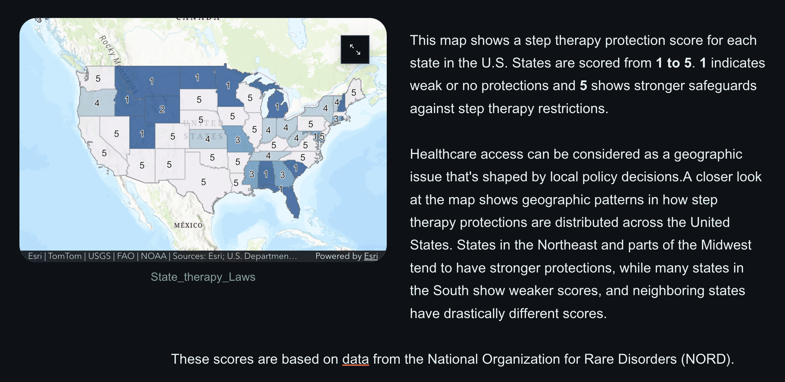

## Parker Jessie, M.S.  

Ph.D. candidate at Howard University with a focus on health communications. Graduate of Howard University's Applied Data Science & Analytics program (M.S.) and a graduate of Morehouse College (B.A. in Business Administration & Management).

---
### Howard University Portfolio
This portfolio showcases my research throughought my graduate studies.

### Statistics
[View Statistical Analysis](https://github.com/PJMorehouse/pjmorehouse.github.io/blob/main/Statistical_Analysis_Data_Preparation_Project)

### Machine Learning
[View Machine Learning Models](https://github.com/PJMorehouse/pjmorehouse.github.io/blob/main/Machine_Learning_Project)

### Computational Social Justice
[View Social Justice Analysis](social_justice.md)

### Data Storytelling
[View StoryMap Analysis](storymap.md)

<a href="https://storymaps.arcgis.com/stories/586582aa002b43a8a74c11e7e609bf53" target="_blank">
    
</a>


### Contact Info
- **Email:** [parker.jessie@bison.howard.edu](mailto:parker.jessie@bison.howard.edu)
- **LinkedIn:** [LinkedIn Profile](https://www.linkedin.com/in/plivjessie/)
---
### Quick Links
- [Resume / CV](./resume.html)
